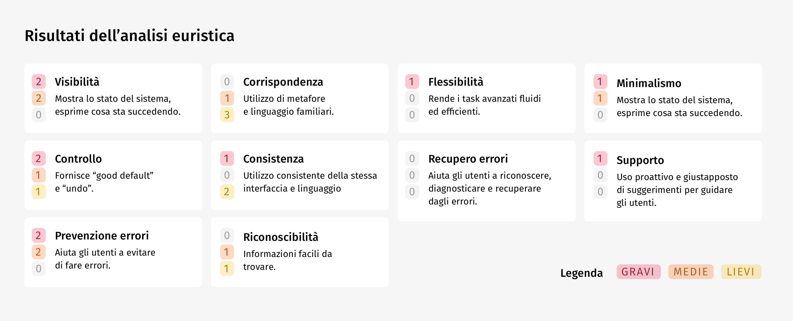
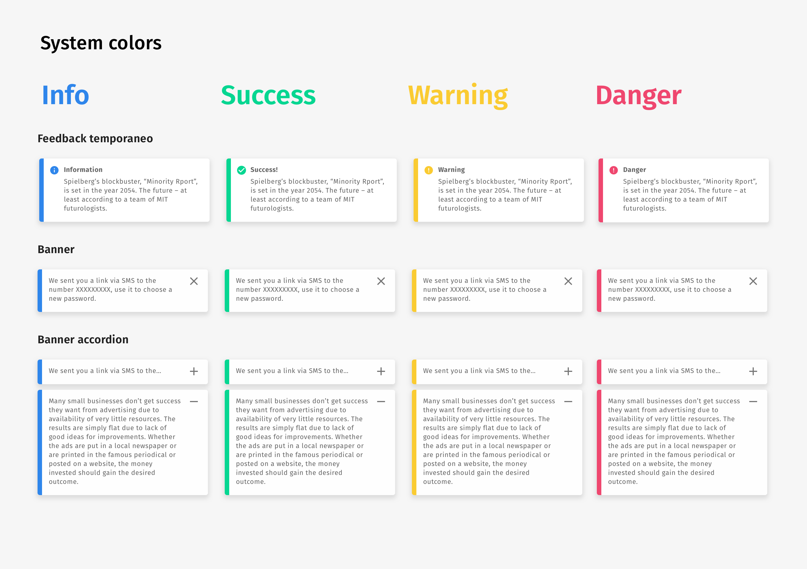
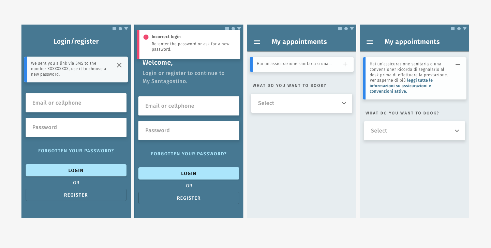
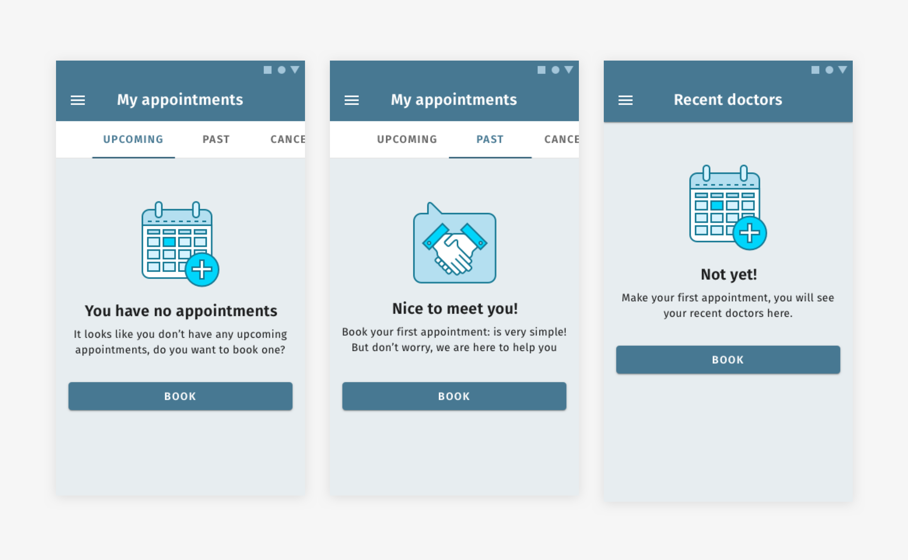
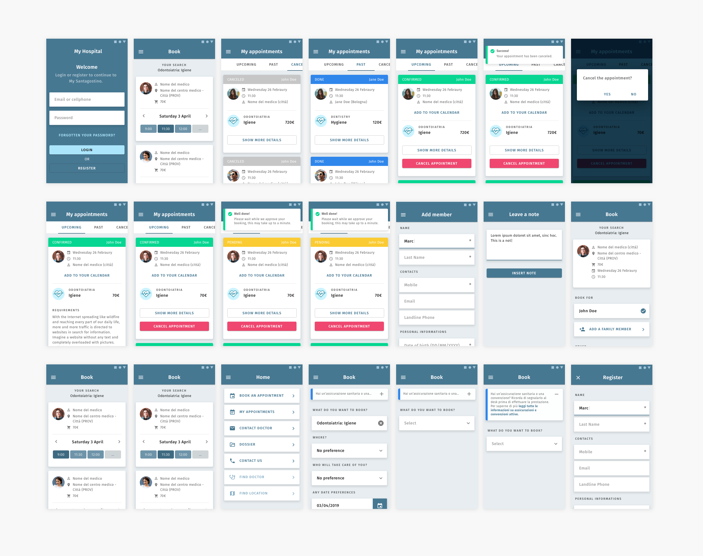

TuoTempo is responsible for creating management services for hospitals and healthcare facilities. They provide online booking services and documentation management for doctors and patients.
Business needs and first analysis
The customer's need for the project was to identify critical issues on the current application and design new solutions to improve readability and usability. Therefore, as a first step, we decided to carry out a small analysis that would allow us to obtain information and highlight critical points, and, in parallel, a search and comparison with the competitors present today: in order to obtain ideas and new points of view. In detail, the analysis phase focused on three activities: heuristic analysis, benchmarking between competitors and UI inventory.
Heuristic analysis
The heuristic evaluation is a usability evaluation method (a sort of usability check-up) in which an interface is analyzed to identify weaknesses and critical points through good design guidelines, called heuristics. Among the various evaluation techniques, this is one of the cheapest and fastest to perform because it provides, in its basic form, only the involvement of the expert without the participation of users. Thanks to this analysis, we have been able to identify usability issues that we have categorized according to severity levels (mild, medium, severe).

Competitor analysis and benchmarking
The goal of this activity is to gather ideas in the visual and functional field, analyzing the interfaces of the main competitors. By identifying references, interesting ideas and best practices are defined, to identify improvements and / or modifications for the subsequent design phases. We analyzed the apps: Doctors, Miodottore, Visitami, Poliambulanza Booking and ZocDoc taking into account some parameters and central themes according to the customer's needs. In particular, we analyzed: navigation, booking flow, search criteria, on-boarding and finally the look & feel, obtaining valuable results and ideas in relation to the critical points highlighted by the heuristic analysis.
UI design, the solutions
By crossing the results of the analyzes, we have produced a list of proposals to improve the application, categorized according to a scale of severity and difficulty of implementation. This allowed us, in the prioritization phase, to concentrate on the activities with the greatest impact and least implementation difficulty, in order to proceed with small validable steps. Notification system and system colors
One of the problems highlighted by the heuristic analysis was the lack of a coherent and hierarchical use of colors, especially in notifications, information banners and actions. Therefore, 4 colors have been added to the main palette which clearly show the system status and the extent of the notification and information messages: it is important to use 4 colors with different colors from the main ones in order to communicate clearly to the user the status of the operations performed.
We have also identified 3 types of information tools: the temporary notification, the banner and the banner accordion on which to adapt the various types of components present in the old application. Feedback messages on the actions that the user performs within tuOtempO (e.g. login failed notification) have been associated with temporary notifications. The informative contents present in the various sections of the application, on the other hand, use the two types of banners, following the distinction between main and secondary information: the first are expressed through the accordion banners, while the second through the banners, which provide the possibility of removal by the user.
Blank states and loading
Blank states, i.e. all states in which elements are not yet present at the moment of interaction or in the absence of search results, are an excellent opportunity to establish a dialogue with the user and lead him to perform actions without discouraging him . During the heuristic analysis, the lack of treatment of these cases emerged, which is why we designed some illustrations and microcopies to make the blank states more pleasant.
Furthermore, always with a view to making the experience more pleasant, we have created some animation prototypes for the loading phase of the application: one closer to the current trends, the other with an animation of a beating heart, which it comes alive following the heartbeat of a healthy person.
As a final design activity, we have carried out a generalized refactoring of the UI of the already existing application, in order to improve the hierarchy and usability of content and actions. The images below show some views that are part of the refactoring proposal, made with a clickable inVision prototype.